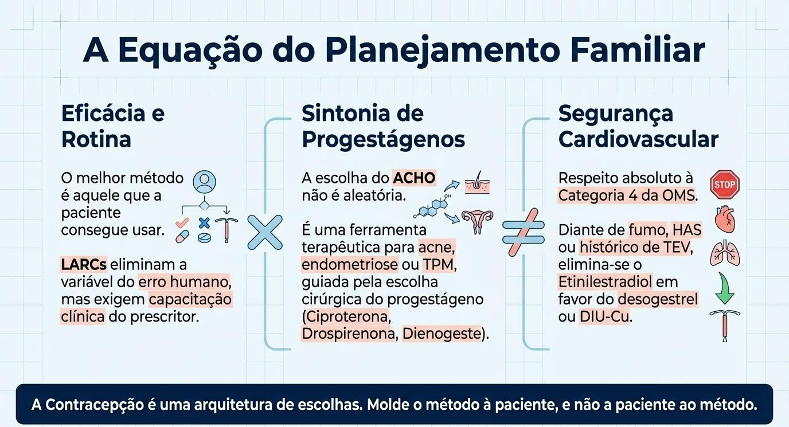

LARCs e Planejamento Familiar — Simulação de Estação OSCE
ESTAÇÃO 1: Aconselhamento — Adolescente Nulípara
[PROFESSOR]: Paciente de 17 anos, nulípara, nega comorbidades, tabagismo negativo. Iniciou vida sexual há 2 semanas, parceiro fixo. Quer "o melhor método anticonceptivo".
Pergunta 1: Qual método você indicaria como primeira escolha?
Resposta esperada: LARC (método de longa ação reversível): implante de etonogestrel ou DIU hormonal (SIU-LNG Kyleena). São os métodos com maior eficácia (>99%), sem uso diário, reversíveis. SBP e FEBRASGO indicam LARCs como primeira escolha para adolescentes — não há contraindicação por ser nulípara.
Pergunta 2: O que é "dupla proteção" e por que é importante?
Resposta esperada: Dupla proteção = método hormonal (ou DIU) + preservativo. Na adolescência há alta incidência de ISTs e AIDS. O LARC protege contra gravidez mas não contra ISTs — o preservativo deve ser mantido sempre.
Pergunta 3: Quais são as contraindicações absolutas ao DIU nessa paciente?
Resposta esperada: Cavidade uterina distorcida (septo, mioma submucoso, malformação), DIP ativa ou cervicite no momento da inserção, sangramento uterino anormal não investigado, câncer de colo/endométrio aguardando tratamento. Ser nulípara ou adolescente NÃO é contraindicação.
ESTAÇÃO 2: Mulher com Contraindicação ao Estrogênio
[PROFESSOR]: Paciente de 38 anos, tabagista (1 maço/dia), 6 semanas de pós-parto, amamentando exclusivamente. Deseja contracepção imediata. Pressão arterial: 130×85 mmHg.
Pergunta 1: Quais métodos estão contraindicados e por quê?
Resposta esperada: Métodos com estrogênio (ACO combinado, anel vaginal, adesivo, injetável mensal combinado) — categoria 4 OMS: tabagista >35 anos + risco tromboembólico. Amamentação <6 semanas também contraindica estrogênio (inibe prolactina). DIU só após 4 semanas pós-parto (risco de expulsão).
Pergunta 2: Quais as opções para essa paciente?
Resposta esperada: Métodos sem estrogênio: minipílula (desogestrel 75 µg), injetável trimestral (AMPD/Depo-Provera 150 mg IM), implante de etonogestrel, DIU hormonal (SIU-LNG) ou DIU de cobre. Todos podem ser usados na amamentação. Preservativo como dupla proteção.
Pergunta 3: Ela pergunta se pode usar a pílula do dia seguinte como método regular. O que você responde?
Resposta esperada: A contracepção de emergência (levonorgestrel 1,5 mg em dose única até 72h, ou DIU de cobre até 5 dias) NÃO deve ser usada rotineiramente — menor eficácia, não protege contra ISTs, causa sangramento irregular. Orientar método regular imediatamente.
ESTAÇÃO 3: Escolha do DIU — Cobre vs. Hormonal
[PROFESSOR]: Paciente de 32 anos, G2P2, dismenorreia intensa, fluxo aumentado, sem gestação planejada nos próximos 5 anos. Nega comorbidades. Quer DIU.
Pergunta 1: Qual DIU você escolheria e por quê?
Resposta esperada: DIU hormonal (SIU-LNG Mirena): além de contraceptivo de alta eficácia, reduz significativamente o fluxo menstrual (pode causar amenorreia) e a dismenorreia. Indicado como terapêutico em SUA, adenomiose, endometriose e dismenorreia. O DIU cobre aumentaria o fluxo, piorando o quadro.
Pergunta 2: Quais as diferenças entre DIU de cobre e DIU hormonal?
Resposta esperada:
| Característica | DIU Cobre (TCu 380A) | DIU Hormonal (SIU-LNG Mirena) |
|---|---|---|
| Hormônio | Não | Sim (LNG 20 µg/dia local) |
| Mecanismo | Espermicida inflamatório (fagocitose, prostaglandinas) | Muco cervical hostil + atrofia endometrial |
| Efeito no fluxo | Pode aumentar | Reduz (amenorreia em ~20%) |
| Duração | 10 anos | 5–8 anos |
| Emergência | Até 5 dias | Não |
| Indicação terapêutica | Emergência, sem estrogênio | SUA, endometriose, dismenorreia, TRH |
Pergunta 3: Quais complicações do DIU você deve orientar à paciente?
Resposta esperada: Perfuração uterina (1/1.000 inserções — prevenção: histerometria antes da inserção), expulsão (autoexame dos fios mensalmente), cistos de ovário funcionais (geralmente regridem), gravidez com DIU (rara, mas 80% são ectópicas — urgência). Acompanhamento: USG transvaginal anual.
Pontos que o professor vai checar
0/7 marcados
Tabela de LARCs — Referência Rápida

| Método | Duração | Hormônio | Eficácia | Destaque |
|---|---|---|---|---|
| DIU cobre (TCu 380A) | 10 anos | Não | >99% | Emergência (5 dias), amamentação |
| SIU-LNG Mirena 52 mg | 5–8 anos | LNG 20 µg/dia | >99% | SUA, endometriose, amenorreia |
| SIU-LNG Kyleena 19,5 mg | 5 anos | LNG 9 µg/dia | >99% | Nulíparas, adolescentes |
| Implante etonogestrel | 3 anos | ENG 30–40 µg/dia | >99,9% | Amamentação, adolescentes, obesidade |
Critérios de Elegibilidade OMS (Resumo)
- Categoria 1: sem restrição
- Categoria 2: benefícios > riscos (usar com cautela)
- Categoria 3: riscos > benefícios (evitar se possível)
- Categoria 4: contraindicação absoluta
Fonte
- Gerado a partir de:
conteudo_planejamento_familiar.md(Aula 03 + Aula Prática de Planejamento Familiar) - Seções consultadas: LARCs, DIU cobre e hormonal, contraindicações, contracepção de emergência, adolescência, critérios OMS
- Gaps identificados: Passo a passo técnico da inserção do DIU não detalhado no material; complementado com conhecimento geral